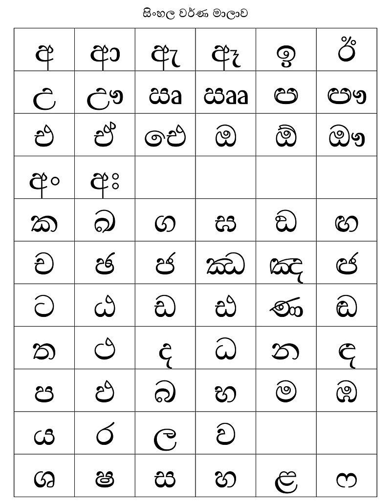

Highly creative and multitalented web developer And agriculture graduate who is conecting agriculture with modern technology to work in a fun and challenging working environment that will encourage her to improve and learn new and necessary skills
CONTACTS
- E-mail: sandunikaparanahewa@gamil.com
- Tel:+81 090 1209 5391
- Address: 606- 8181
Ichijoji, Sakyo Ward, Kyoto City, Kyoto Prefecture
PROFESSIONAL QUALIFICATION
- Worked as a trainee at the sasith furniture (2021/02 – 2022/01)
- 5.5 Marks in IELTS Academic examination on 2022/05/21
- Completed the Japanese Language NAT 5 -TEST Examination – passed (2022/08)
- Following Certificate Course in Japanese Language Conducted by University of Kelaniya (2022/08)
- Successfully Completed the Certificate course in Human Resource Management at IPM (2017/05 - 2017/09)
- Successfully Completed the Certificate course in Computer Application Assistant (NVQ level 3) Conducted by National Apprentice and Industrial Training Authority (2018/02)
- Successfully Completed the SLCCL Course Conducted by NAITA (2015/05)
- Successfully Completed certificate in preliminary level in English language conducted by Royal way Institute (2012/01)
EDUCATION
- Completed BSc Special degree in Agricultural Resource Management & Technology at University of Ruhuna (2016-2020)
- G.C.E. Advanced Level - Year 2014 - 1B, 2C
- G.C.E. Ordinary Level - Year 2011 - 7A, 1B, 1C School attended:
- Pinnawala Central College (National school)
- Kg/Bandaranayaka M.V
PROFESSIONAL EDUCATION
Research Area- Observation of Behavior of Elephants (Elephas maximus) with Special Emphasis on Stereotypic Behavior under Management Practices in Captivity at Different Ages
SECONDARY EDUCATION
SKILLS
- Web Designing
- Graphic Designing
- HTML & CSS
HOBBIES
- Watching Videos
- Listening Music
- Languages studying
| Teledramas | TV series | Films |
|---|---|---|
Sinhalese
Sinhala, sometimes called Sinhalese, is an Indo-Aryan language primarily spoken by the Sinhalese people of Sri Lanka, who make up the largest ethnic group on the island, numbering about 16 million.
English
English is a West Germanic language in the Indo-European language family, with its earliest forms spoken by the inhabitants of early medieval England.
Japanese
Japanese is spoken as a native language by about 128 million people, primarily Japanese people and primarily in Japan, the only country where it is the national language. Japanese belongs to the Japonic or Japanese-Ryukyuan language family.